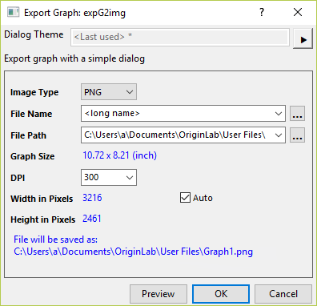

Wenn Sie einige erweiterte Einstellungen während des Exportierens der Diagramme vornehmen möchten, sollten Sie stattdessen das Hilfsmittel Grafiken exportieren verwenden.
Der Dialog Diagramm als Bild exportieren ist ein einfaches Hilfsmittel, um das aktuelle Diagramm als eine Bilddatei zu exportieren.
| Rasterbild | Vektorbild |
|---|---|
|  |
Wenn Sie einige erweiterte Einstellungen während des Exportierens der Diagramme vornehmen möchten, sollten Sie stattdessen das Hilfsmittel Grafiken exportieren verwenden. |
Hier unterstützt Origin vier allgemeine Bildtypen: PNG (Standard), BMP, JPEG, TIFF, EMF, SVG und PDF.
Legen Sie den Dateinamen für das exportierte Bild fest. Standardmäßig wird der Langname des aktuellen Diagramms verwendet.
Legen Sie einen Pfad fest, um die exportierte Bilddatei zu speichern. Standardmäßig wird der Anwenderdateiordner verwendet.
Aktivieren Sie dieses Kontrollkästchen, um das Diagramm mit einem transparenten Hintergrund zu exportieren. Nur für PNG und TIFF verfügbar.
Legen Sie die Auflösung des exportierten Bilds in DPI (Punkte pro Zoll) fest. Verfügbar für Rasterformattyp (d. h. PNG, BMP, JPEG, TIFF)
Passen Sie die Breite und Höhe des Bilds in Pixel an. Standardmäßig ist Auto aktiviert, das heißt, es wird die tatsächliche Diagrammgröße verwendet.
Hinweis: Die Einheit folgt auch der Einstellung im Dialog Details Zeichnung.
Aktivieren Sie dieses Kontrollkästchen, um das Textelement in einen Pfad umzuwandeln und damit sicherzustellen, dass der Text richtig angezeigt wird, auch wenn der Zielcomputer die entsprechende Schriftart nicht unterstützt. Andernfalls wird die Standardschrift für die Anzeige verwendet, was bei einigen Schriftarten dazu führen kann, dass sie nicht konsistent sind mit anderen.
Verfügbar für Vektorformattyp (d. h. SVG, EMF)
Skalieren Sie die exportierte Bildgröße mit festgelegtem Faktor in Prozent. Verfügbar für Vektorformattyp (d. h. SVG, EMF)
Wenn der Dunkelmodus eingeschaltet ist, aktivieren Sie dieses Kontrollkästchen, um das Diagramm mit den Farbeinstellungen des Dunkelmodus zu exportieren.
Klicken Sie auf die Schaltfläche Vorschau, um den Bildexport in einem internen Viewer anzuzeigen. Beachten Sie, dass der Viewer Folgendes unterstützt: